This tutorial will explain how to extend the editor by replacing controls to display certain attributes.
The following screenshot displays the "Library" model loading a book.
The task will be to replace the attribute displaying the book's title, and not any of the other attributes.
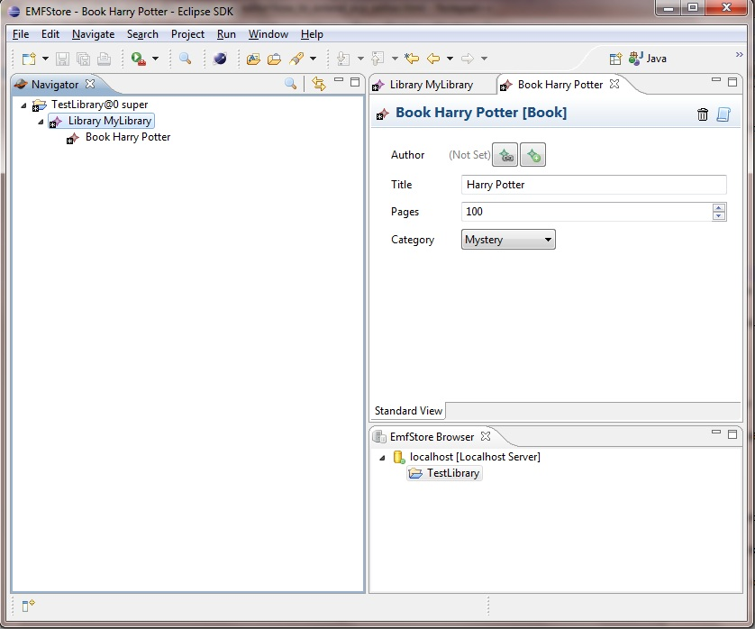
All components of the editor are replaceable by extension points.
What we are going to do then, is to create a new plugin project.
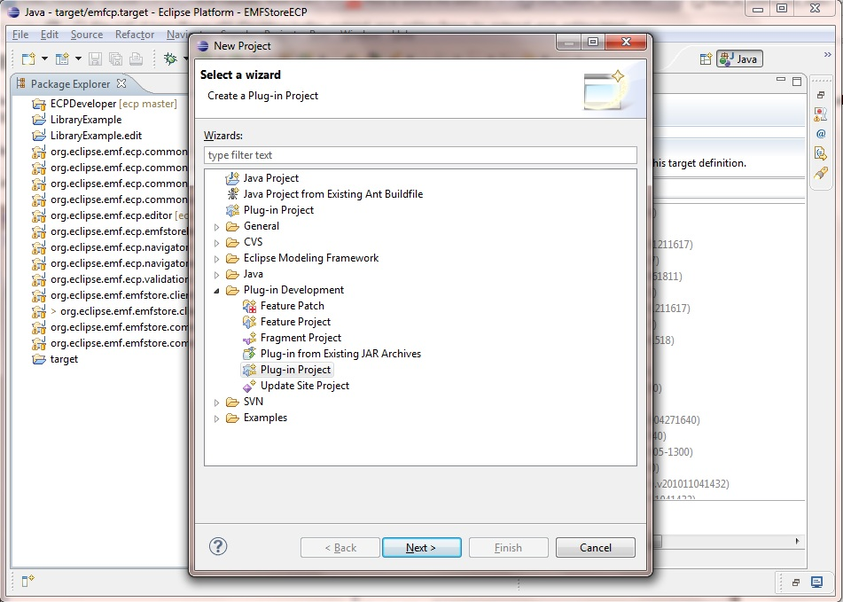
Let's name the new project (or control) TestControl.
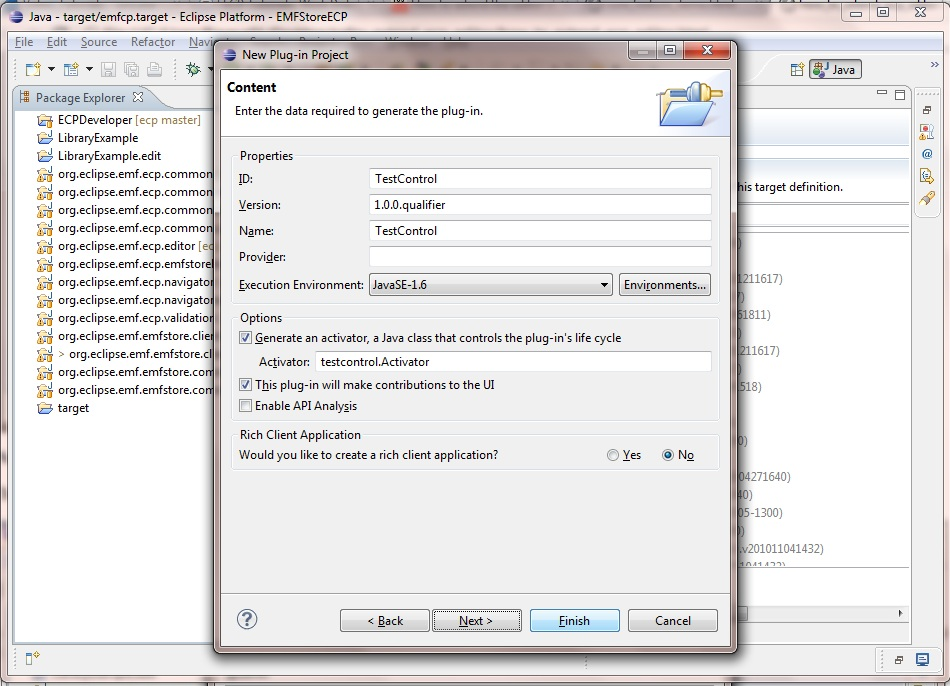
The next step is to add the dependencies for our new plugin. We need two dependencies, the first is the LibraryExample (representing our model),
the second is the ecp editor. The added dependencies are highlighted in the following screenshot.
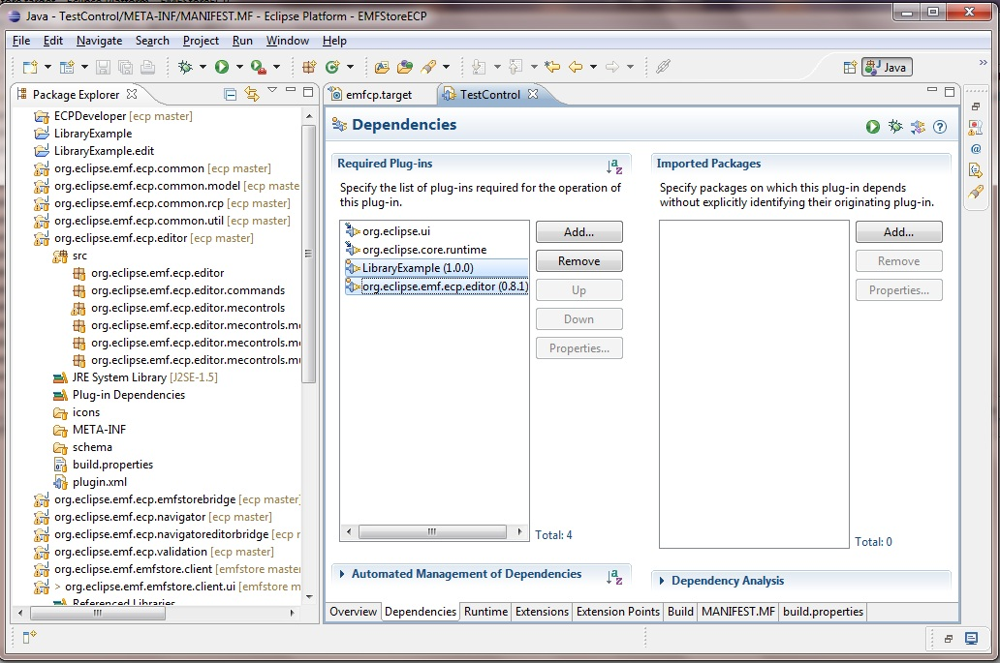
The next step is to add the extension point of the editor we are going to use.
To do this, we will click the extensions tab, and then we will use the filter to search for the word "editor".
We will get the extension points available for the editor. The one we are going to use is the attributecontrols (because we want to replace an attribute control).
The selected extension point is highlighted in the following screenshot.
We are going to click finish.
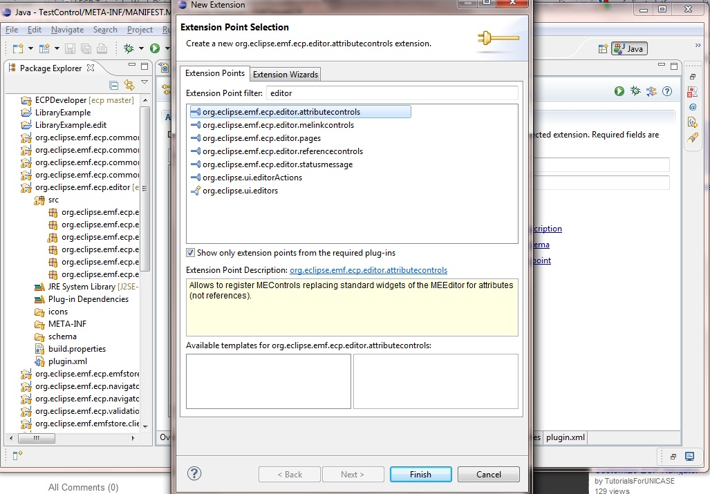
We will leave the class name as suggested. We only need to edit the type field. We will change it into java.lang.String (because our control will display text).
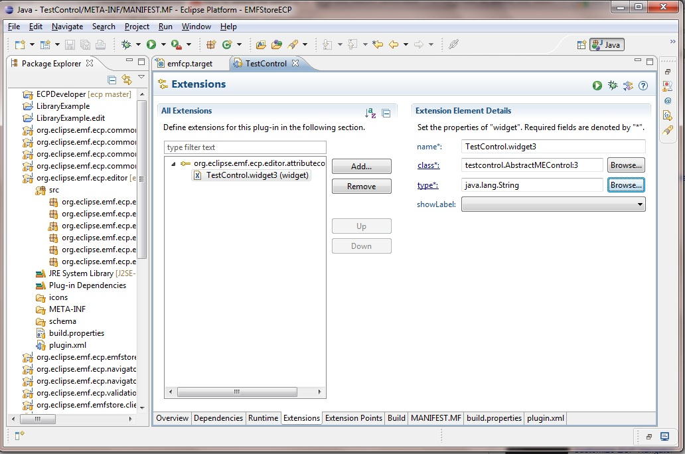
Clicking the class link will open the class definition wizard. As shown in the following screenshot, the created class will extend class AbstractMEControl. We click finish.
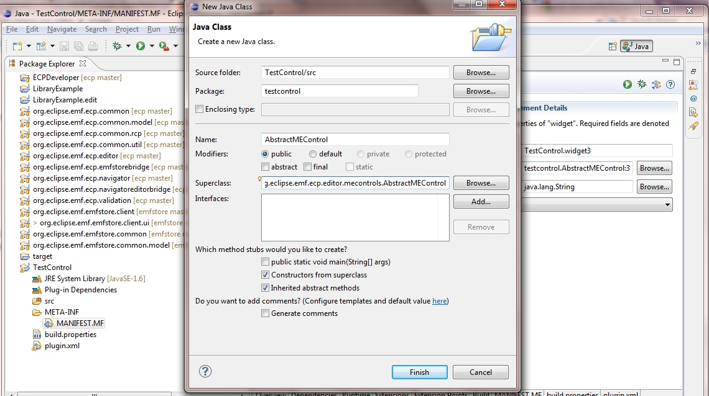
The class that opens up shows that we need to implement two methods. The first method is the "canRender()" method. This method specifies whether the attribute should be rendered.
If this method returns a value higher than "1", the editor will display this attribute.
The second method is "createControl()". This method is responsible for displaying the control, in other words, what should appear in the control in question.
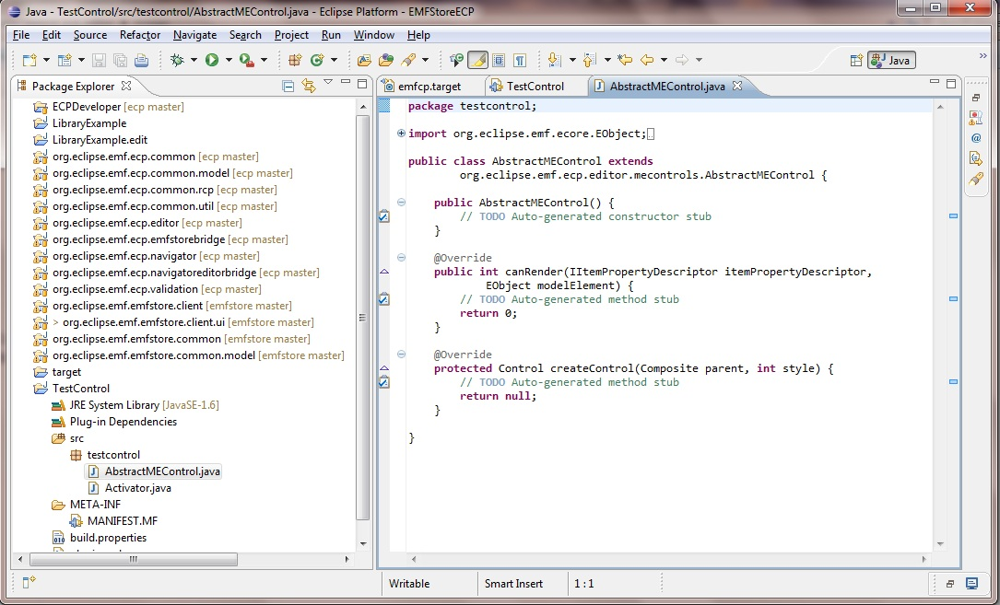
The next screenshot shows the implementation of the method "canRender()". First, we get the attribute object from the model element.
This is done by calling the itemPropertyDescriptor.getFeature() method. Then, we make a check that the modelElement in question is a "Book", and that the attribute in question is the title of the book.
If this is the case, we tell the editor that the element can be rendered. We are doing this by returning a value greater than 1. If it's not the case - for convenience, and readability - we will return the contstant DO_NOT_RENDER.
Remember that our task was to replace the Title attribute of the book.
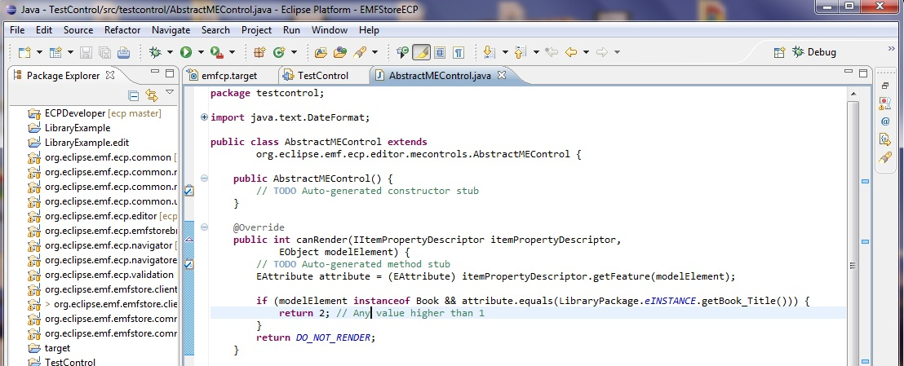
The following screenshot will show how to override the method "createControl()". Showing what actually to display in the attribute we are going to replace.
Let's display the current Date/Time (instead of the book title). This is done by creating a label object, and setting its text to the current Date/Time pair.
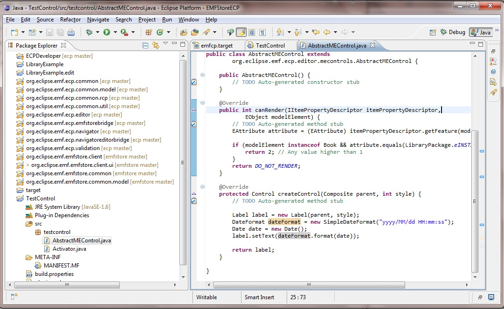
The final step is to make sure what we have done actually works.
Let's now run the EMF Client Platform again. And see what will happen to the Title attribute of a book.
The next screenshot shows what has to be expected (The current Date/Time instead of the book's title).
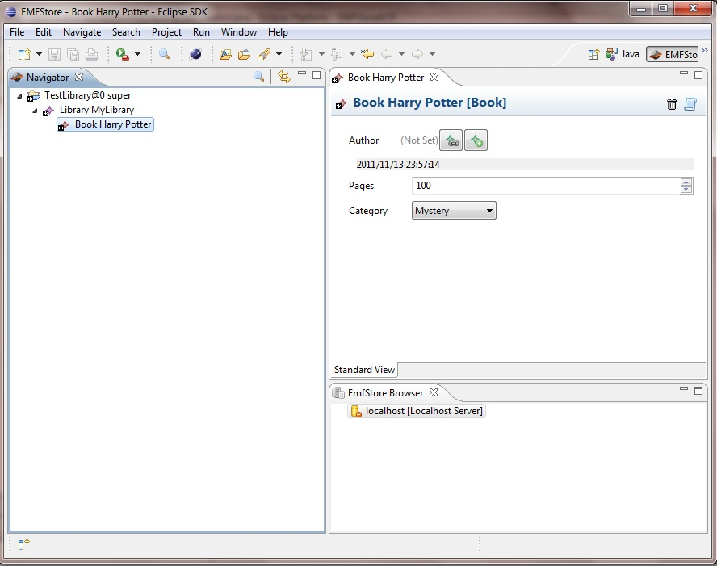